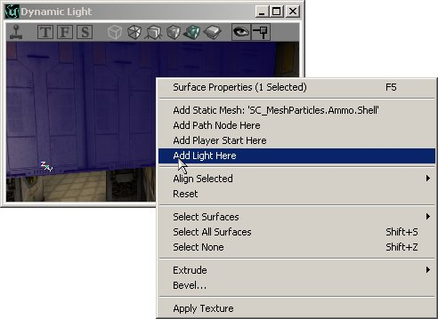
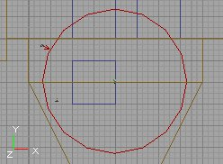
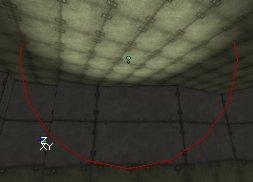
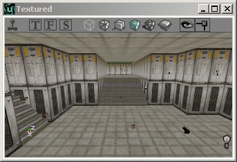
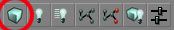

UDN
Search public documentation:
UsingLightsKR
English Translation
日本語訳
Interested in the Unreal Engine?
Visit the Unreal Technology site.
Looking for jobs and company info?
Check out the Epic games site.
Questions about support via UDN?
Contact the UDN Staff
日本語訳
Interested in the Unreal Engine?
Visit the Unreal Technology site.
Looking for jobs and company info?
Check out the Epic games site.
Questions about support via UDN?
Contact the UDN Staff
광원의 사용
문서 요약: 광원을 비롯하여 광원과 관련된 기능의 사용법에 대한 일반적인 안내. 문서 변경 내역: 최종 업데이트 Jason Lentz (DemiurgeStudios?) – 좀 더 관리하기 쉽도록 문서를 분리함. 원저자 Lode Vandevenne (UdnStaff)서론
여기서는 조명의 기본에 대해 배우게 됩니다. 이 문서에서는 광원의 배치 방법을 보여드리고, 레벨 내에서 보다 쉽고 정확하게 조명을 이용할 수 있도록 해주는 기능들에 대해서 설명합니다.광원 추가하기
먼저 광원을 추가할 방이 필요합니다. 충분히 큰 방을 하나 만드십시오. 방이 완성되면 뷰에서 아무곳이나 오른 클릭하면 나타나는 메뉴에서 "Add Light Here (이곳에 광원 추가)"를 선택합니다. 클릭한 곳 근처에 작은 전구 그림이 나타납니다. 이것이 빛의 소스입니다!

 광원을 추가할 수 있는 단축 키도 있습니다: L 키를 누른 상태로 뷰에서 광원이 추가될 지점을 클릭하면 됩니다.
광원이 처음 원하던 위치에 놓여지지 않으면, 물론 다른 액터를 옮기는 것처럼 이것도 원하는 곳으로 옮길 수 있습니다.
광원을 추가할 수 있는 단축 키도 있습니다: L 키를 누른 상태로 뷰에서 광원이 추가될 지점을 클릭하면 됩니다.
광원이 처음 원하던 위치에 놓여지지 않으면, 물론 다른 액터를 옮기는 것처럼 이것도 원하는 곳으로 옮길 수 있습니다.
Radii View (반경 뷰)
툴바에서 viewport --> Actor --> Radii View 를 오른 클릭하면 이 옵션이 유효화됩니다. 이것은 광원 주위에 그 반경을 나타내는 빨강색 원을 표시합니다. 이것은 3D 뷰에서도 작용합니다. 보통 광원의 구체가 이 원보다 작아 보입니다. 광원이 가장자리로 갈수록 어두워지기 때문입니다. LightEffect 가 NonIncidence 일때만 이 둘이 같습니다.

3D View Modes (3D 뷰 모드)
동적 조명 모드의 3D 뷰가 있는 경우에는 방금 추가한 광원 주위의 벽들이 밝아지는 것을 볼 수 있습니다. 3D 뷰에는 여러가지 모드가 있으며, 그 중 일부는 광원을 사용하여 작업 할 때 중요한 것들입니다. 모드를 선택하려면 3D 뷰 위에 있는 버튼들을 사용합니다. 아래의 스크린샷들에서 엷은 초록색의 버튼들이 설명되는 모드를 활성화하기 위해 눌러야 할 것들입니다 . 마우스 커서를 버튼 위에 잠시 올리면 그 버튼의 이름이 노랑색으로 표시되는 것을 볼 수 있습니다. Textured (텍스처됨): 맵의 모든 벽을 완전한 밝기로 표시하고 모든 조명을 무시합니다. 게임에서 벽이 이런 식으로 보이게 되는 것은 아닙니다. 도형을 먼저 작성하고 싶어서 아직 맵에 조명을 전혀 추가하지 않은 경우, 또는 광원에 의해 너무 어두워졌거나 색이 너무 들어간 벽의 원래 텍스처를 확인하고 싶을 때 이 모드를 사용할 수 있습니다.
Dynamic Light (동적 광원): 맵을 모든 조명과 함께 보여줍니다. 광원을 재빌드하고 아직 광원을 하나도 추가하지 않았다면 오직 검정색만 보게 됩니다. 이 모드는 게임에서 볼 수 있는 것과 거의 같은 조명을 보여줍니다. 그러므로 맵의 조명 작업을 할 때는 항상 이 모드를 사용하십시오. Realtime Preview (실시간 미리보기): 이것은 어느 뷰포트에서나 켰다 껐다 할 수 있습니다: 뷰의 상단에서 작은 조이스틱처럼 생긴 버튼을 클릭하거나, 뷰를 선택한 다음 P 키를 누르십시오. 에디터의 메인 툴바에서 조이스틱을 클릭하지 마십시오. 그것을 누르면 맵을 테스트하기 위해 게임을 시작합니다. 뷰가 이 Realtime Preview 모드에 있을 경우에는, 항상 실시간으로 업데이트 됩니다. 따라서 한 뷰에서 무엇인가 변경하면, 이 모드에 있는 다른 뷰에서도 그것이 변경되는 것을 볼 수 있습니다. 그러나 이것은 에디터를 다소 느려지게 합니다. 이 모드에서 또 하나 중요한 점은 깜박이는 빛이나 애니메이트된 텍스처 등 애니메이션을 볼 수 있는 것입니다. Realtime Preview 모드가 꺼지면 3D 뷰에서 동적 조명이 애니메이트에 어떻게 영향을 주는지 볼 수 없습니다. 또 이 모드는 ZonePortal 및 그밖의 비가시성 폴리곤들을 정말로 보이지 않게 만듭니다.
Realtime Preview (실시간 미리보기): 이것은 어느 뷰포트에서나 켰다 껐다 할 수 있습니다: 뷰의 상단에서 작은 조이스틱처럼 생긴 버튼을 클릭하거나, 뷰를 선택한 다음 P 키를 누르십시오. 에디터의 메인 툴바에서 조이스틱을 클릭하지 마십시오. 그것을 누르면 맵을 테스트하기 위해 게임을 시작합니다. 뷰가 이 Realtime Preview 모드에 있을 경우에는, 항상 실시간으로 업데이트 됩니다. 따라서 한 뷰에서 무엇인가 변경하면, 이 모드에 있는 다른 뷰에서도 그것이 변경되는 것을 볼 수 있습니다. 그러나 이것은 에디터를 다소 느려지게 합니다. 이 모드에서 또 하나 중요한 점은 깜박이는 빛이나 애니메이트된 텍스처 등 애니메이션을 볼 수 있는 것입니다. Realtime Preview 모드가 꺼지면 3D 뷰에서 동적 조명이 애니메이트에 어떻게 영향을 주는지 볼 수 없습니다. 또 이 모드는 ZonePortal 및 그밖의 비가시성 폴리곤들을 정말로 보이지 않게 만듭니다.
 Lighting Only (조명에 한함): 이것은 벽들을 모두 하얗게 만들어 그 위의 조명 효과를 보여줍니다.
Lighting Only (조명에 한함): 이것은 벽들을 모두 하얗게 만들어 그 위의 조명 효과를 보여줍니다.

게임 설정
F10, F11 및 F12 키를 사용하면 각각 화면의 감마, 밝기, 대비를 변경할 수 있습니다. 이것은 에디터 및 게임에서 작용합니다. Advanced Options --> Display 에서 이 설정들을 변경할 수도 있습니다. Advanced Options 에 가려면 메뉴에서 View 를 열어 Advanced Options 를 선택하면 됩니다. 플레이어들이 이곳에서 무엇이든 설정할 수 있다는 것을 명심하십시오. 따라서 여러분에게 어두워 보이는 맵이 플레이어에게는 매우 밝아 보일 수 있습니다. 여러분 맵에서의 밝기와 어두움 사이의 차이만 결코 바뀌지 않습니다.재빌드
전구를 몇 개 추가했다면 이미 약간의 빛을 보게 될 것입니다. 그러나 최종 결과를 위해서는 도형과 조명을 재빌드해야 합니다. 도형을 먼저 재빌드해야 합니다. 그렇지 않으면 조명의 재빌드가 정확하게 되지 않습니다. 도형을 재빌드하려면 UnrealEd 의 위쪽 툴바에서 이 버튼을 눌러야 합니다:
도형을 재빌드하고 나면 모든 벽들이 완전 밝기로 됩니다. 조명을 다시 가져오려면 조명을 재빌드해야 합니다: UnrealEd 의 위쪽 툴바에서 이 버튼을 누르십시오: 조명을 재빌드하려면 UnrealEd 의 위쪽 툴바에서 이 버튼을 누르십시오:Scale Lights (광원의 조정)
Tools 메뉴에는 Scale Lights 라는 도구가 있습니다. 이것을 사용해서 여러 개 또는 모든 광원의 밝기 값을 한 번에 조정할 수 있습니다. 하나의 광원을 선택하여 그 Light Properties 를 연 다음 LightColor 를 확장하십시오 (이것은 꼭 필요한 일은 아니고, 값이 바뀌는 것을 확인하기 위해서입니다). 이제 Tools 메뉴에서 Scale Lights 를 여십시오. Literal Value (문자 값)에 100 을 입력하십시오. 광원의 속성에서 LightBrightness 를 볼 수 있는지 확인하십시오. Scale Lights 창에서 OK 를 클릭하고 LightBrightness 가 변경되는 것을 지켜 보십시오. OK 를 누를 때마다 이 값이 변경됩니다: 즉 100 만큼 더 밝아집니다.
Percentage (퍼센트) 필드에 100 을 입력하면 OK 를 누를 때마다 LightBrightness 가 두 배가 됩니다. 이 값이 50 이라면, 1.5 배, 20 이라면 1.2 배 등이 됩니다.
마이너스 값을 입력하여 광원을 더 어둡게 할 수도 있습니다.
이 도구의 이점은, 두 개 또는 그 이상의 광원을 선택하고 이 도구를 사용하면 선택한 광원들의 LightBrightness 가 각 광원마다 별도로 계산된다는 점입니다. 따라서 이 광원들 가운데 하나의 밝기가 50 이고 또 하나는 80 일 경우, literal value 로 20 을 입력하면 첫 번째 광원은 70 그리고 두 번째 것은 100 이 됩니다.
여러가지 LightBrightness 의 광원들이 있는 방을 가지고 있는데, 이 광원들을 모두 조금씩 밝게 하고 싶을 경우 이 도구가 도움이 됩니다. 광원들을 모두 선택한 다음 이 도구를 사용하면 됩니다.
하나의 광원을 선택하여 그 Light Properties 를 연 다음 LightColor 를 확장하십시오 (이것은 꼭 필요한 일은 아니고, 값이 바뀌는 것을 확인하기 위해서입니다). 이제 Tools 메뉴에서 Scale Lights 를 여십시오. Literal Value (문자 값)에 100 을 입력하십시오. 광원의 속성에서 LightBrightness 를 볼 수 있는지 확인하십시오. Scale Lights 창에서 OK 를 클릭하고 LightBrightness 가 변경되는 것을 지켜 보십시오. OK 를 누를 때마다 이 값이 변경됩니다: 즉 100 만큼 더 밝아집니다.
Percentage (퍼센트) 필드에 100 을 입력하면 OK 를 누를 때마다 LightBrightness 가 두 배가 됩니다. 이 값이 50 이라면, 1.5 배, 20 이라면 1.2 배 등이 됩니다.
마이너스 값을 입력하여 광원을 더 어둡게 할 수도 있습니다.
이 도구의 이점은, 두 개 또는 그 이상의 광원을 선택하고 이 도구를 사용하면 선택한 광원들의 LightBrightness 가 각 광원마다 별도로 계산된다는 점입니다. 따라서 이 광원들 가운데 하나의 밝기가 50 이고 또 하나는 80 일 경우, literal value 로 20 을 입력하면 첫 번째 광원은 70 그리고 두 번째 것은 100 이 됩니다.
여러가지 LightBrightness 의 광원들이 있는 방을 가지고 있는데, 이 광원들을 모두 조금씩 밝게 하고 싶을 경우 이 도구가 도움이 됩니다. 광원들을 모두 선택한 다음 이 도구를 사용하면 됩니다.